Amendment #228 (S.O. 142(E), 1995)
20 changes: 8 to the First Schedule, 12 to the Second Schedule. 20 applied
What it did to the ministries
- renamedMinistry of Rural Development is renamed Ministry of Rural Areas and Employment change 5, 6, 16, 17, 18 · histories: Rural Development
- renamedMinistry of Urban Development is renamed Ministry of Urban Affairs and Employment change 7, 8, 19, 20 · histories: Housing and Urban Affairs
The order, page by page
Page 1 of 12
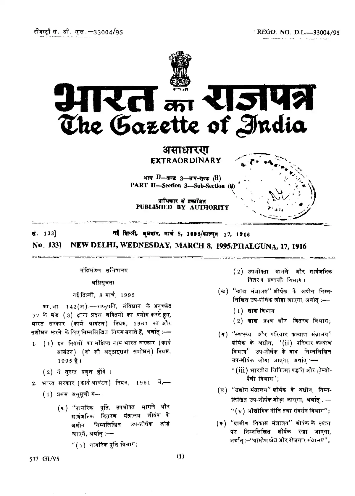
Page 2 of 12
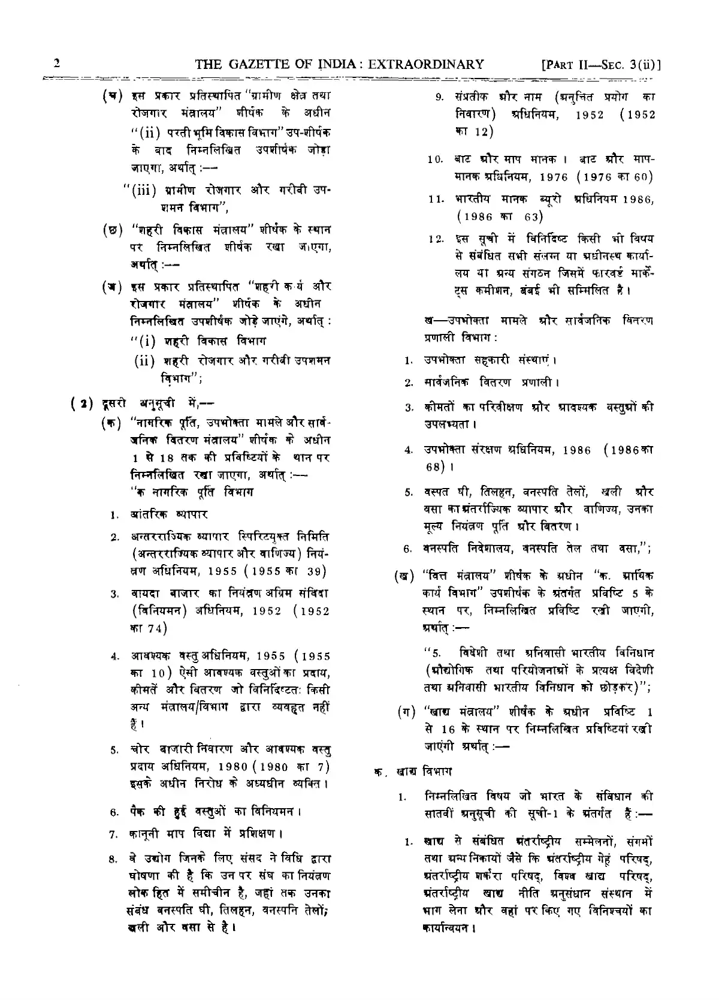
Page 3 of 12
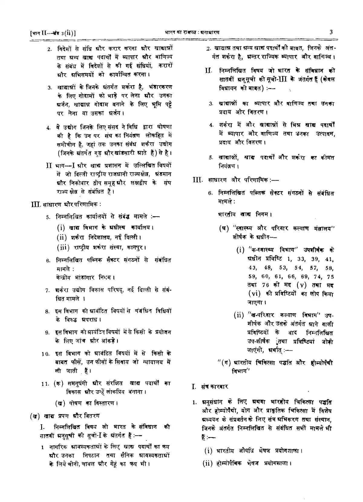
Page 4 of 12
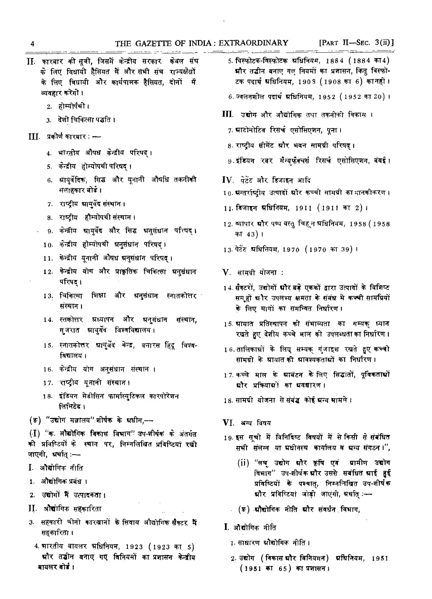
Page 5 of 12
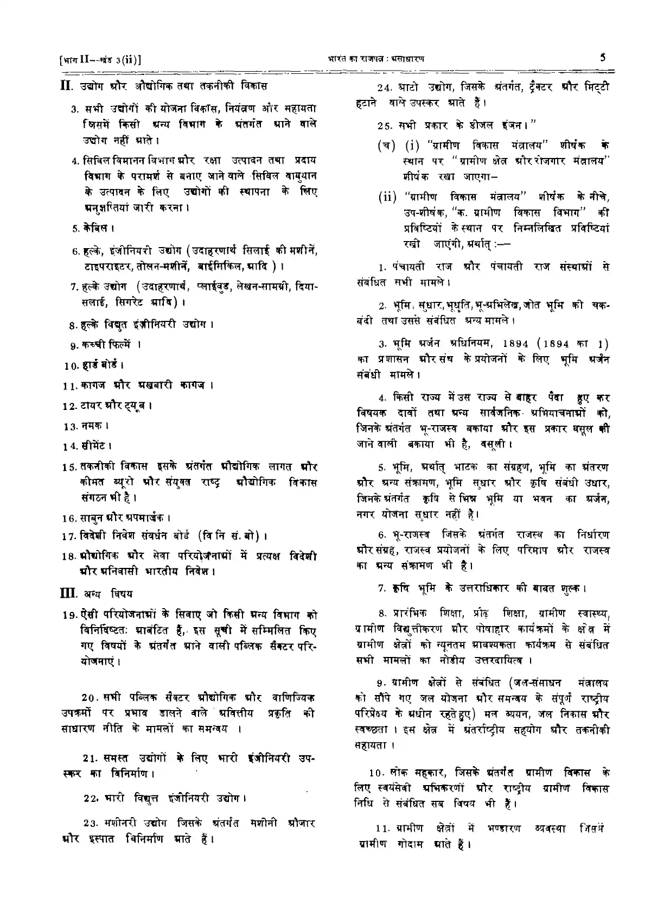
Page 6 of 12
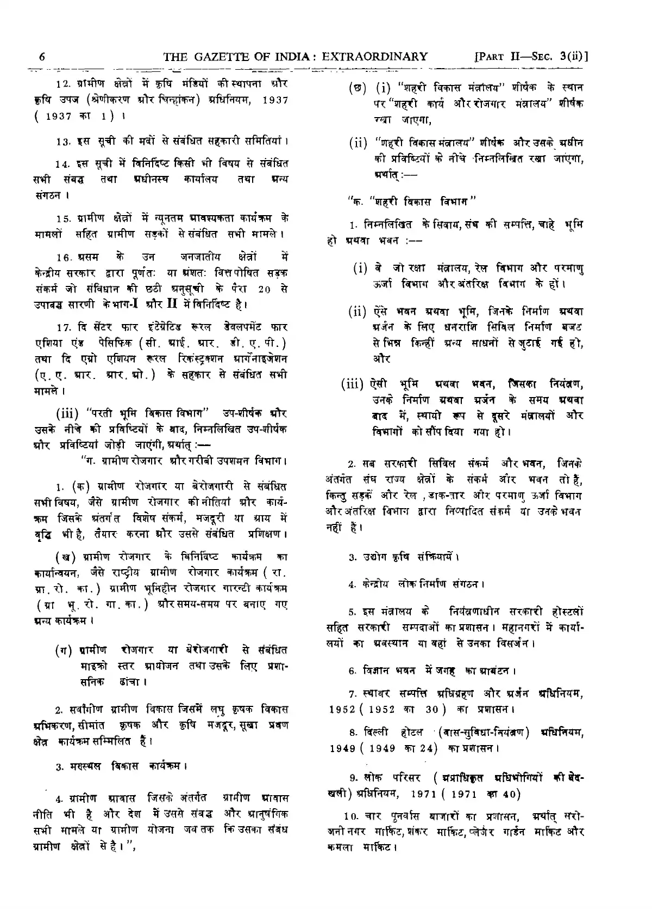
Page 7 of 12
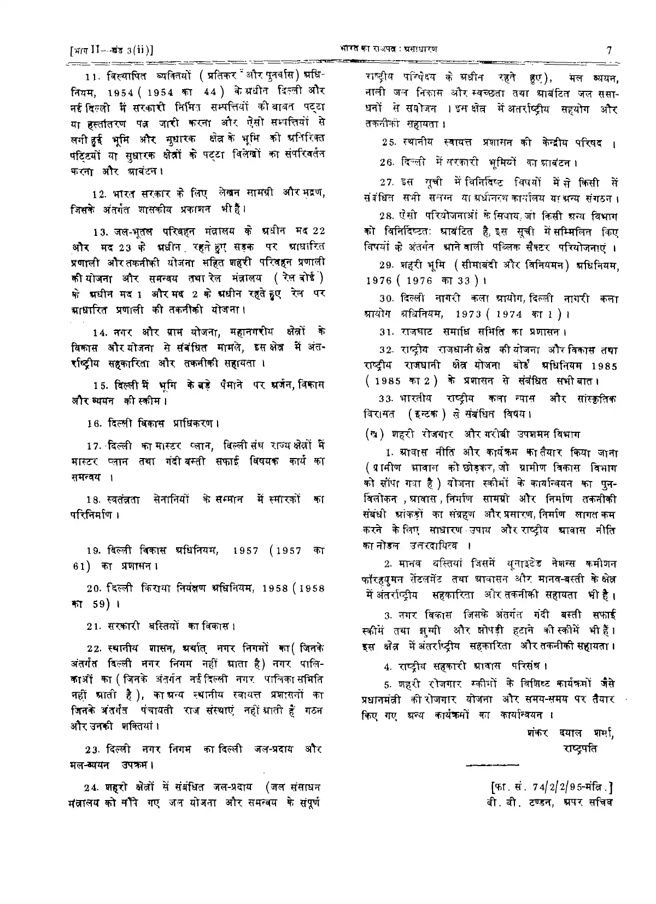
Page 8 of 12
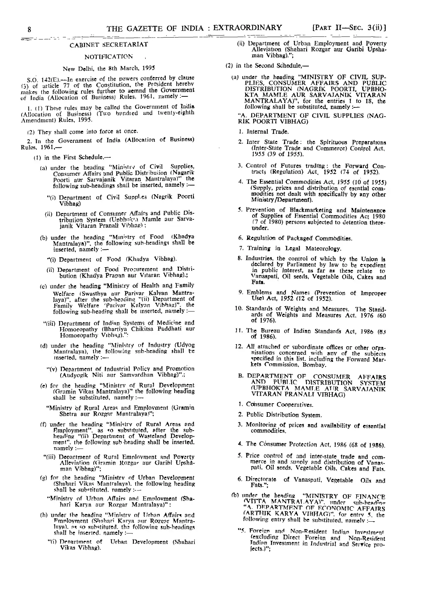
12345678910after Schedule 1 › Ministry of Civil Supplies, Consumer Affairs and Public Distribution
- i. Department of Civil Supplies
- ii. Department of Consurner Affairs and Public Distribution System
applied at schedule 1 › ministry 4 in the Rules after #228
after Schedule 1 › Ministry of Food
- (1) Department of Food (Khadya Vibhag).
- ii. Department of Food Procurement and Distribution
applied at schedule 1 › ministry 12 in the Rules after #228
after Schedule 1 › Ministry of Health and Family Welfare › Department of Family Welfare
- iii. Department of Indian Systems of Medicine and Homoeopathy
applied at schedule 1 › ministry 14 › department iii in the Rules after #228
after Schedule 1 › Ministry of Industry
- v. Department of Industrial Policy and Promotion
applied at schedule 1 › ministry 17 in the Rules after #228
Schedule 1 › Ministry of Rural Development
- Ministry of Rural Areas and Employment (Gramīn Shetra aur Rozgar Mantralaya)
applied at schedule 1 › ministry 28 in the Rules after #228
after Schedule 1 › Ministry of Rural Areas and Employment › Department of Wastelands Development
- iii. Department of Rural Employment and Poverty Alleviation
applied at schedule 1 › ministry 28 › department iii in the Rules after #228
Schedule 1 › Ministry of Urban Development
- Ministry of Urban Affairs and Employment
applied at schedule 1 › ministry 33 in the Rules after #228
after Schedule 1 › Ministry of Urban Affairs and Employment
- i. Department of Urban Development --
- ii. Department of Urban Employment and Poverty Alleviation
applied at schedule 1 › ministry 33 in the Rules after #228
Schedule 2 › MINISTRY OF CIVIL SUPPLIES, CONSUMER AFFAIRS AND PUBLIC DISTRIBUTION › entry
- A. DEPARTMENT OF CIVIL SUPPLIES
- 1. Internal Trade.
- 2. Inter State Trade: the Spirituous Preparations (Inter-State Trade and Commerce) Control Act 1955 (39 of 1955).
- 3. Control of Futures trading • the Forward Contracts (Regulation) Act, 1952 (74 of 1952).
- 4. The Essential Commodities Act, 1955 (10 of 1955) (Supply, prices and distribution of esential commodities not dealt with specifically by any other Ministry/Department).
- 5. Prevention of Blackmarketing and Maintenance of Supplies of Essential Commodities Act 1980 (7 of 1980) persons subjected to detention thereunder.
and 14 more
- 6. Regulation of Packaged Commodities.
- 7. Training in Legal Mateorology.
- 8. Industries, the control of which by the Union is declared by Parliament by law to be expedient in public interest, as far as these relate to Vanaspati, Oil seeds, Vegetable Oils, Cakes and Fats.
- 9. Emblems and Names (Prevention of Improper Use) Act, 1952 (12 of 1932).
- 10. Standards of Weights and Measures. The Standards of Weights and Measures Act. 1976 (60 of 1976).
- 11. The Bureau of Indian Standard's Act, 1986 (83 of 1986).
- 12. All attached or subordinate offices or other organisations concerned with any of the subjects specified in this list. including the Forward Markets Commission, Bombay.
- B. DEPARTMENT OF CONSUMER AFFAIRS AND PUBLIC DISTRIBUTION SYSTEM
- 1. Consumer Cooperatives.
- 2. Public Distribution System.
- 3. Monitoring of prices and availability of essential commodities.
- 4. The Consumer Protection Act, 1986 (68 of 1986).
- 5. Price control of and inter-state trade and commerce in and supply and distribution of Vanaspati, Oil seeds, Vegetable Oils, Cakes and Fats.
- 6. Directorate of Vanaspati, Vegetable Oils and Fats.
applied at schedule 2 › ministry MINISTRY OF CIVIL SUPPLIES, CONSUMER AFFAIRS AND PUBLIC DISTRIBUTION › entry 1 in the Rules after #228
Schedule 2 › MINISTRY OF FINANCE › DEPARTMENT OF ECONOMIC AFFAIRS › entry 5
- 5. Foreign and Non-Resident Indian Investment (excluding Direct Foreign and Non-Resident Indian Investment in Industrial and Service projects.)
applied at schedule 2 › ministry MINISTRY OF FINANCE › department A › group_heading I › entry 5 in the Rules after #228
Page 9 of 12
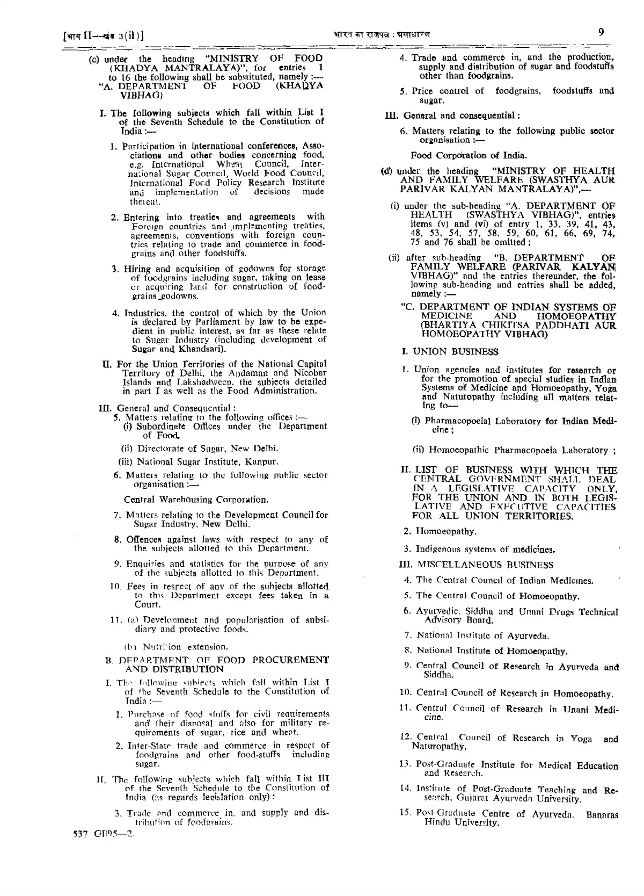
111213Schedule 2 › MINISTRY OF FOOD › entry
- A. DEPARTMENT OF FOOD
- I. The following subjects which fall within List I of the Seventh Schedule to the Constitution of India -
- 1. Participation in international conferences, Associations and other bodies concerning food e.g. International Wheat Council, International Sugar Council, World Food Council International Food Policy Research Institute and implementation of decisions made thereal.
- 2. Entering into treaties and agreements with Foreign countries and implementing treaties agreements, conventions with foreign countries relating to trade and commerce in foodgrains and other foodstuffs.
- 3. Hiring and acquisition of godowns for storage of foodgrains including sugar, taking on lease or acquiring land for construction of foodgrains godowns.
- 4. Industries, the control of which by the Union is declared by Parliament by law to be expedient in public interest, as far as these relate to Sugar Industry (including development of Sugar and Khandsari).
and 24 more
- II. For the Union Territories of the National Capital Territory of Delhi, the Andaman and Nicobar Islands and Lakshadweep, the subjects detailed in part I as well as the Food Administration.
- III. General and Consequential :
- 5. Matters relating to the following offices :-
- i. Subordinate Offices under the Department of Food
- ii. Directorate of Sugar, New Delhi.
- iii. National Sugar Institute, Kanpur.
- 6. Matters relating to the following public sector organisation : Central Warehousing Corporation.
- 7. Matters relating to the Development Council for Sugar Industry, New Delhi
- 8. Offences against laws with respect to any of the subjects allotted to this Department.
- 9. Enquiries and statistics for the purpose of any of the subjects allotted to this Department.
- 10. Fees in respect of any of the subjects allotted to this Department except fees taken in a Court.
- 11.
- a. Development and popularisation of subsidiary and protective foods.
- b. Nutrition extension.
- B. DEPARTMENT OF FOOD PROCUREMENT AND DISTRIBUTION
- I. The following subjects which fall within List I of the Seventh Schedule to the Constitution of India: _
- 1. Purchase of food stuffs for civil requirements and their disposal and also for military requiroments of sugar, rice and wheat.
- 2. Inter-State trade and commerce in respect of foodgrains and other food-stuffs including sugar.
- II. The following subjects which fall within I ist III of the Seventh Schedule to the Constitution of India (as regards legislation only):
- 3. Trade and commerce in, and supply and distribution of foodgrains. 537 GT195-2.
- 4. Trade and commerce in, and the production supply and distribution of sugar and foodstuffs other than foodgrains.
- 5. Price control of foodgrains, foodstuffs and sugar.
- III. General and consequential :
- 6. Matters relating to the following public sector organisation — Food Corporation of India.
applied at schedule 2 › ministry MINISTRY OF FOOD › entry 1 in the Rules after #228
read hindi missing, read page break
Schedule 2 › MINISTRY OF HEALTH AND FAMILY WELFARE › DEPARTMENT OF HEALTH › entry 1 › item v; Schedule 2 › MINISTRY OF HEALTH AND FAMILY WELFARE › DEPARTMENT OF HEALTH › entry 1 › item vi; Schedule 2 › MINISTRY OF HEALTH AND FAMILY WELFARE › DEPARTMENT OF HEALTH › entry 33; Schedule 2 › MINISTRY OF HEALTH AND FAMILY WELFARE › DEPARTMENT OF HEALTH › entry 39; Schedule 2 › MINISTRY OF HEALTH AND FAMILY WELFARE › DEPARTMENT OF HEALTH › entry 41; Schedule 2 › MINISTRY OF HEALTH AND FAMILY WELFARE › DEPARTMENT OF HEALTH › entry 43; Schedule 2 › MINISTRY OF HEALTH AND FAMILY WELFARE › DEPARTMENT OF HEALTH › entry 48; Schedule 2 › MINISTRY OF HEALTH AND FAMILY WELFARE › DEPARTMENT OF HEALTH › entry 53; Schedule 2 › MINISTRY OF HEALTH AND FAMILY WELFARE › DEPARTMENT OF HEALTH › entry 54; Schedule 2 › MINISTRY OF HEALTH AND FAMILY WELFARE › DEPARTMENT OF HEALTH › entry 57; Schedule 2 › MINISTRY OF HEALTH AND FAMILY WELFARE › DEPARTMENT OF HEALTH › entry 58; Schedule 2 › MINISTRY OF HEALTH AND FAMILY WELFARE › DEPARTMENT OF HEALTH › entry 59; Schedule 2 › MINISTRY OF HEALTH AND FAMILY WELFARE › DEPARTMENT OF HEALTH › entry 60; Schedule 2 › MINISTRY OF HEALTH AND FAMILY WELFARE › DEPARTMENT OF HEALTH › entry 61; Schedule 2 › MINISTRY OF HEALTH AND FAMILY WELFARE › DEPARTMENT OF HEALTH › entry 66; Schedule 2 › MINISTRY OF HEALTH AND FAMILY WELFARE › DEPARTMENT OF HEALTH › entry 69; Schedule 2 › MINISTRY OF HEALTH AND FAMILY WELFARE › DEPARTMENT OF HEALTH › entry 74; Schedule 2 › MINISTRY OF HEALTH AND FAMILY WELFARE › DEPARTMENT OF HEALTH › entry 75; Schedule 2 › MINISTRY OF HEALTH AND FAMILY WELFARE › DEPARTMENT OF HEALTH › entry 76
applied at schedule 2 › ministry MINISTRY OF HEALTH AND FAMILY WEL- FARE (SWASTHYA AUR PARIVAR KALYAN MANT- RALAYA) › department… in the Rules after #228
after Schedule 2 › MINISTRY OF HEALTH AND FAMILY WELFARE › DEPARTMENT OF FAMILY WELFARE
- C. DEPARTMENT OF INDIAN SYSTEMS OF MEDICINE AND HOMOEOPATHY
- I. UNION BUSINESS
- 1. Union agencies and institutes for research or for the promotion of special studies in Indian Systems of Medicine and Homoeopathy, Yoga and Naturopathy including all matters relating to- (D)Pharmacopoelal Laboratory for Indian Medicine
- ii. Homoeopathic Pharmacopoeia Laboratory
- II. LIST OF BUSINESS WITH WHICH THE CENTRAL GOVERNMENT SHALL DEAL IN A LEGISLATIVE CAPACITY ONLY FOR THE UNION AND IN BOTH LEGIS- LATIVE AND EXECUTIVE CAPACITIES FOR ALL UNION TERRITORIES.
- 2. Homoeopathy.
and 17 more
- 3. Indigenous systems of medicines.
- III. MISCELLANEOUS BUSINESS
- 4. The Central Council of Indian Medicines.
- 5. The Central Council of Homoeopathy.
- 6. Ayurvedic, Siddha and Unani Drugs Technical Advisory Board.
- 7. National Institute of Ayurveda.
- 8. National Institute of Homoeopathy.
- 9. Central Council of Research in Ayurveda and Siddha.
- 10. Central Council of Research in Homoeopathy
- 11. Central Council of Research in Unani Medicine.
- 12. Central Council of Research in Yoga and Naturopathy.
- 13. Post-Graduate Institute for Medical Education and Research.
- 14. Institute of Post-Graduate Teaching and Research, Gujarat Ayurveda University.
- 15. Post-Graduate Centre of Ayurveda. Banaras Hindu University.
- 16. Central Research Institute for Yoga
- 17. National Institute of Unani.
- 18. Indian Medicines Pharmaceutical Corporation Limited.
applied at schedule 2 › ministry MINISTRY OF HEALTH AND FAMILY WEL- FARE (SWASTHYA AUR PARIVAR KALYAN MANT- RALAYA) › department C in the Rules after #228
read page break
Page 10 of 12
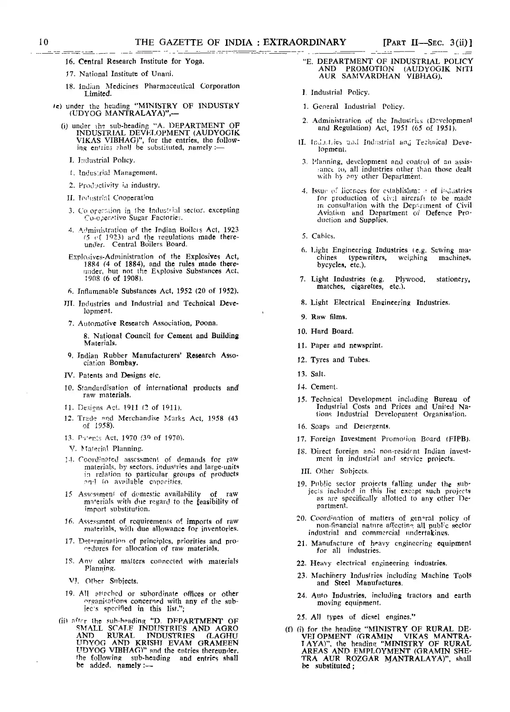
141516Schedule 2 › MINISTRY OF INDUSTRY › DEPARTMENT OF INDUSTRIAL DEVELOPMENT
- I. Industrial Policy.
- 1. Industrial Management.
- 2. Productivity in industry.
- II. Industrial Cooperation.
- 3. Co operation in the Industrial sector. excepting Co-operative Sugar Factories.
- 4. Administration of the Indian Boilers Act, 1923 (5 of 1923) ard the regulations made thereunder. Central Boilers Board Explosives-Administration of the Explosives Act 1884 (4 of 1884), and the rules made thereunder, but not the Explosive Substances Act 1908 (6 of 1908).
and 18 more
- 6. Inflammable Substances Act, 1952 (20 of 1952).
- III. Industries and Industrial and Technical Development.
- 7. Automotive Research Association, Poona.
- 8. National Council for Cement and Building Materials.
- 9. Indian Rubber Manufacturers' Research Ass0- ciation Bombay.
- IV. Patents and Designs etc.
- 10. Standardisation of international products and raw materials.
- 11. Designs Act. 1911 (2 of 1911).
- 12. Trede and Merchandise Marks Act, 1958 (43 of 1958).
- 13. Patents Act, 1970 (39 of 1970).
- V. Material Planning.
- 14. Coordinated assessment of demands for raw materials, by sectors. industries and large-units in relation to particular groups of products and to available capacities.
- 15. Assessment of domestic availability of raw materials with due regard to the feasibility of import substitution.
- 16. Assessment of requirements of imports of raw materials, with due allowance for inventories.
- 17. Determination of principles, priorities and procedures for allocation of raw materials.
- 18. Any other matters connected with materials Planning.
- VI. Other Subjects.
- 19. All attached or subordinate offices or other organisations concerned with any of the subjec's specified in this list.
applied at schedule 2 › ministry MINISTRY OF INDUSTRY › department A in the Rules after #228
after Schedule 2 › MINISTRY OF INDUSTRY › DEPARTMENT OF SMALL SCALE INDUSTRIES AND AGRO AND RURAL INDUSTRIES
- E. DEPARTMENT OF INDUSTRIAL POLICY AND PROMOTION
- 1. Industrial Policy.
- 1. General Industrial Policy.
- 2. Administration of the Industries (Development and Regulation) Act, 1951 (65 of 1951).
- II. Iodities and Industrial and Technical Development.
- 3. Planning, development and control of an assisance to, all industries other than those dealt with by any other Department.
and 23 more
- 4. Issue of licences for establishm of industries for production of cival aircraft to be made in consultation with the Department of Civil Aviation and Department of Defence Production and Supplica.
- 5. Cables.
- 6. Light Engineering Industries (e.g. Sewing machines typewriters, weighing machines bycycles, etc.)
- 7. Light Industries (e.g. Plywood, stationery matches, cigarettes, etc.).
- 8. Light Electrical Engineering Industries.
- 9. Raw films.
- 10. Hard Board.
- 11. Paper and newsprint.
- 12. Tyres and Tubes.
- 13. Salt.
- 14. Cement.
- 15. Technical Development including Bureau of Industrial Costs and Prices and United Nations Industrial Development Organisation.
- 16. Soaps and Detergents.
- 17. Foreign Investment Promotion Board (FIPB).
- 18. Direct foreign and non-resident Indian investment in industrial and service projects.
- III. Other Subjects.
- 19. Public sector projects falling under the subjec's included in this list except such projects as are specifically allotted to any other Department.
- 20. Coordination of matters of general policy of non-financial nature affecting all public sector industrial and commercial undertakings.
- 21. Manufacture of heavy engineering equipment for all industries.
- 22. Heavy electrical engineering industries.
- 23. Machinery Industries including Machine Tools and Steel Manufactures.
- 24. Auto Industries, including tractors and earth moving equipment.
- 25. All types of diesel engines.
applied at schedule 2 › ministry MINISTRY OF INDUSTRY › department E in the Rules after #228
Schedule 2 › MINISTRY OF RURAL DEVELOPMENT
- MINISTRY OF RURAL AREAS AND EMPLOYMENT
applied at schedule 2 › ministry MINISTRY OF RURAL AREAS AND EMPLOYMENT in the Rules after #228
Page 11 of 12
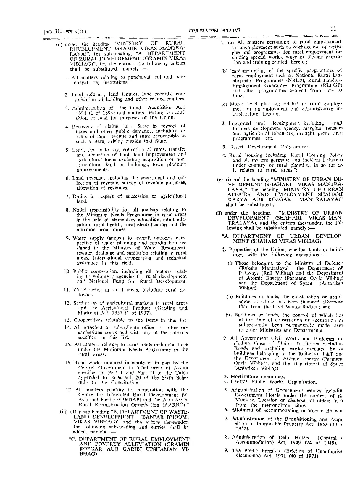
17181920Schedule 2 › MINISTRY OF RURAL DEVELOPMENT › DEPARTMENT OF RURAL DEVELOPMENT
- 1. All matters relating to panchayati raj and panchavati raj institutions.
- 2. Land reforms, land tenures, land records, consolidation of holding and other related matters.
- 3. Administration of the Land Acquisition Act 1894 (1 of 1894) and matters relating to acquisition of land for purposes of the Un'on.
- 4. Recovery of claims in a State in respect of taxes and other public demands, including arrears of land revenue and sums recoverable as Much arrears, arising outside that State.
- 5. Lend, that is to say, collection of rents, transfer and alienation of land, land improvement and agricultural loans excluding acquisition of nonagricultural land or buildings, town planning improvements.
- 6. Land revenue, including the assessment and collection of revenue, survey of revenue purposes alienation of revenues.
and 11 more
- 7. Duties in respect of succession to agricultural land.
- 8. Nodal responsibility for all matters relating to the Minimum Needs Programme in rural areas in the field of elementary education, adult education, rural health, rural electrification and the nutrition programmes.
- 9. Water supply (subject to overall national perspective of water planning and coordination assigned to the Ministry of Water Resources) sewage, drainage and sanitation relating to rural areas. International cooperation and technical assistance in this field.
- 10. Public cooperation, including all matters relating to voluntary agencies for rural development an National Fund for Rural Development.
- 11. Werchensing in rural areas, including rural godowns.
- 12. Setting no of agricultural markets in rural areas and the Agricultural Produce (Grading and Marking) Act, 1937 (1 of 1937).
- 13. Cooperatives relatable to the items in this list.
- 14. All attached or subordinate offices or other organisations concerned with any of the subjects specified in this list.
- 15. All matters relating to rural roads including those under the Minimum Needs Programme in the rural areas.
- 16. Road works financed in whole or in part by the Central Government in tribal areas of Assam Enecified in Part I and Part II of the Table appended to paragraph 20 of the Sixth Schedule to the Constitution.
- 17. All matters relating to cooperation with the Centre for Integrated Rural Development for Asia and Pacific (CIRDAP) and the Afro-Asian Rural Reconstruction Organisation (AARRO).
applied at schedule 2 › ministry MINISTRY OF RURAL AREAS AND EMPLOYMENT › department A in the Rules after #228
states inferred so renamed
after Schedule 2 › MINISTRY OF RURAL DEVELOPMENT › DEPARTMENT OF WASTELAND DEVELOPMENT
- C. DEPARTMENT OF RURAL EMPLOYMENT AND POVERTY ALLEVIATION (GRAMIN ROZGAR AUR GARIBI UPSHAMAN VI- BHAG).
- 1.
- a. All matters pertaining to rural employment or unemployment such as working out of strategies and programmes for rural employment including special works, wage or income generation and training related thereto
- b. Implementation of the specific programmes of rural employment such as National Rural Employment Programmes (NREP), Rural Lundiess Employment Guarantee Programme (RLIGP) and other programmes evolved from time to time.
- c. Micro level playing related to rural employmet or unemployment and administrative infrastructure therefor.
- 2. Integrated rural development, including mall farmers development agency, marginal farmers and agricultural labourers, drought prone area programmes, etc.
and 2 more
- 3. Desert Development Programmes.
- 4. Rural housing including Rural Housing Policy and all matters gormane and incidental thereto under country or rural planning, in so far as it relates to rural areas.
applied at schedule 2 › ministry MINISTRY OF RURAL AREAS AND EMPLOYMENT › department C in the Rules after #228
states inferred loose, states inferred so renamed
Schedule 2 › MINISTRY OF URBAN DEVELOPMENT
- MINISTRY OF URBAN AFFAIRS AND EMPLOYMENT
applied at schedule 2 › ministry MINISTRY OF URBAN AFFAIRS AND EMPLOYMENT in the Rules after #228
Schedule 2 › MINISTRY OF URBAN DEVELOPMENT
- A. DEPARTMENT OF URBAN DEVELOP- MENT
- 1. Properties of the Union, whether lands or buildings, with the following exceptions :-
- i. Those belonging to the Ministry of Defence (Raksha Mantralaya) the Department of Railways (Rail Vibhag) and the Department of Atomic Energy (Parmanu Oorja Vibhag) and the Department of Space (Antariksh Vibhag).
- ii. Buildings or lands, the construction or acquisition of which has been financed otherwise than from the Civil Works Budget; and
- ii. Buildines or lands, the control of which has at the time of construction or acquisition or subsequently been permanently made over to other Ministries and Departmen's.
- 2. All Government Civil Works and Buildings in cluding those of Union Territories excluding Roads and excluding works executed by on buildings belonging to the Railways, P&T and the Department of Atomic Energy (Parmanu Ooria Vibham, and the Department of Space (Antariksh Vibhag).
and 37 more
- 3. Horticulture operations.
- 4. Central Public Works Organisation.
- 5. Administration of Government estates includin Government Hotels under the control of th Minisfrv. Location or dispersal of offices in o from the metropolitan cities.
- 6. Allotment of accommodation in Vigyan Bhawar
- 7. Administration of the Requisitioning and Acqu sition of Immovable Property Act, 1952 (30 o 1952).
- 8. Administration of Delhi Hotels (Control c Accommodation) Act, 1949 (24 of 1949).
- 9. The Public Premises (Eviction of Unauthorise Occupants) Act, 1971 (40 of 1971).
- 10. Administration of four Rehabilitation Markets viz. Sarojini Nagar Market, Shankar Market Pleasure Garden Market and Kamla Market
- 11. Issue of lease or conveyance deeds in respect of Government built properties in Delhi_and New Delhi under the Displaced Persons (Compensation and Rehabilitation) Act, 1954 (44 of 1954) and conversion of lease deeds, allotment of additional strips of land and correctional areas adjoining such…
- 12. Stationery and Printing for the Government of India including official publications.
- 13. Planning and Coordination of urban transport systems, with technical planning and road based systems being subject to items 22 and 23 under the Ministry of Surface Transport (Jal-Bhoolal Pariwahan Mantralaya) and technical planning of rail based systems being subjects to item 1 and 2 under the…
- 14. Town and Country Planning; matters relating to the Planning and Development of Metropolitian Areas, International Cooperation and technical assistance in this field.
- 15. Schemes of large scale acquisition, development and disposal of land in Delhi.
- 16. Delhi Development Authority.*
- 17. Master Plan of Delhi, Coordination of work in respect of the Master Plan and Slum Clearance in the Union Territory of Delhi.
- 18. Frection of memorials in honour of freedom fighters.
- 19. Administration of Delhi Development Act, 1957 (61 of 1957).
- 20. The Delhi Rent Control Act, 1958 (59 of 1958).
- 21. Development of Governmont Colonies.
- 22. Local Government, that is to say, the constitution and powers of the Municipal Corporations (excluding the Municipal Corporation of Delhi) Municipalities (excluding the New Delhi Municipal Committee), other Local Self-Government Administrations excluding Panchayati Raj Institutions.
- 23. The Delhi Water Supply and Sewage Disposal Undertaking of the Municipal Corporation of Delhi.
- 24. Water supply (subject to overall national pers pective of water planning and coordination assigned to the Ministry of Water Resources), sewage, drainage and sanitation relating to urban areas and linkages from allocated water resour ces. International cooperation and technical as sistance in this…
- 25. The Central Council of Local Self-Government.
- 26. Allotment of Government land in Delhi.
- 27. All attached or Subordinate Offices or other organisations concerned with any of the subjects. specified in this list.
- 28. Public Sector Projects falling under the subject included in this list, except such projects as are specifically allotted to any other Department.
- 29. The Urban Land (Ceiling and Regulation) Act 1976 (33 of 1976).
- 30. Delhi Urban Art Commission, Delhi Urban Art Commission Act, 1973 (1 of 1974).
- 31. Administration of Rajghat Samadhi Committee.
- 32. All matters relating to Planning and Development of the National Capital Region and administration of the National Capital Region Planning Board Act, 1985 (2 of 1985).
- 33. Matters relating to the Indian National Trust for Art and Cultural Heritage (INTÀCH).
- B. DEPARTMENT OF URBAN EMPLOYMENT AND POVERTY ALLEVATION
- 1. Formulation of housing policy and programme (except rural housing which is assigned to the Department of Rural Development), review of the implementation of the Plan Schemes, collection and dissemination of data on housing building materials and techniques, general measures for reduction of…
- 2. Human Settlements including the United Nations Commission for Human Settlements and International Corporation and Technical Assistance in the field of Housing and Human Settlements.
- 3. Urban Development including Slum Clearance Schemes and the Jhuggi and Jhonpri Removal Schemes. International Cooperation and technical assistance in this field.
- 4. National Cooperative Housing Federation
- 5. Implementation of the specific programmes of Urban Employment Schemes such as Prime Minister's Rozgar Yojna and other programmes evolved from time to time.
applied at schedule 2 › ministry MINISTRY OF URBAN AFFAIRS AND EMPLOYMENT in the Rules after #228
read page break, states inferred so renamed
Page 12 of 12
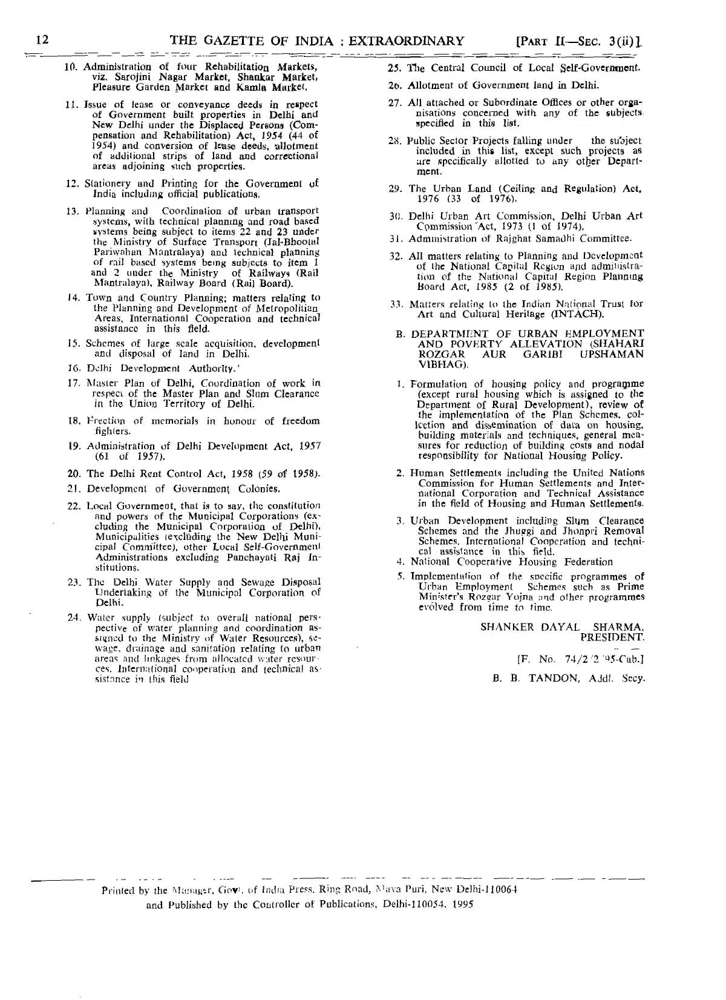
How this document was read
Edits to the reading
| Date | By | Edit | Before → after |
|---|---|---|---|
| 11 November 2026 | mukundesh | word corrected | |
| 11 November 2026 | mukundesh | word corrected | |
| 11 November 2026 | mukundesh | word corrected | |
| 12 November 2026 | claude | word corrected | |
| 12 November 2026 | claude | word corrected | |
| 12 November 2026 | claude | fields set | |
| 12 November 2026 | claude | word removed | |
| 12 November 2026 | claude | word corrected | |
| 12 November 2026 | claude | fields set | |
| 12 November 2026 | claude | word removed |
Changes placed by an inference rule
| Change | Rule | Status | What |
|---|---|---|---|
| 17 | so_renamed | unreviewed | change 17: ministry MINISTRY OF RURAL DEVELOPMENT taken as MINISTRY OF RURAL AREAS AND EMPLOYMENT, the name change 16 of this notification gave it |
| 18 | so_renamed | unreviewed | change 18: ministry MINISTRY OF RURAL DEVELOPMENT taken as MINISTRY OF RURAL AREAS AND EMPLOYMENT, the name change 16 of this notification gave it |
| 18 | loose | accepted | change 18: department DEPARTMENT OF WASTELAND DEVELOPMENT taken for department DEPARTMENT OF WASTE- LANDS DEVELOPMENT, named loosely |
| 20 | so_renamed | unreviewed | change 20: ministry MINISTRY OF URBAN DEVELOPMENT taken as MINISTRY OF URBAN AFFAIRS AND EMPLOYMENT, the name change 19 of this notification gave it |
From the Government of India (Allocation of Business) Rules, 1961 and their amendments, as published by the Cabinet Secretariat (cabsec.gov.in), read by orgpedia. The readings of the older scanned gazettes have known gaps.